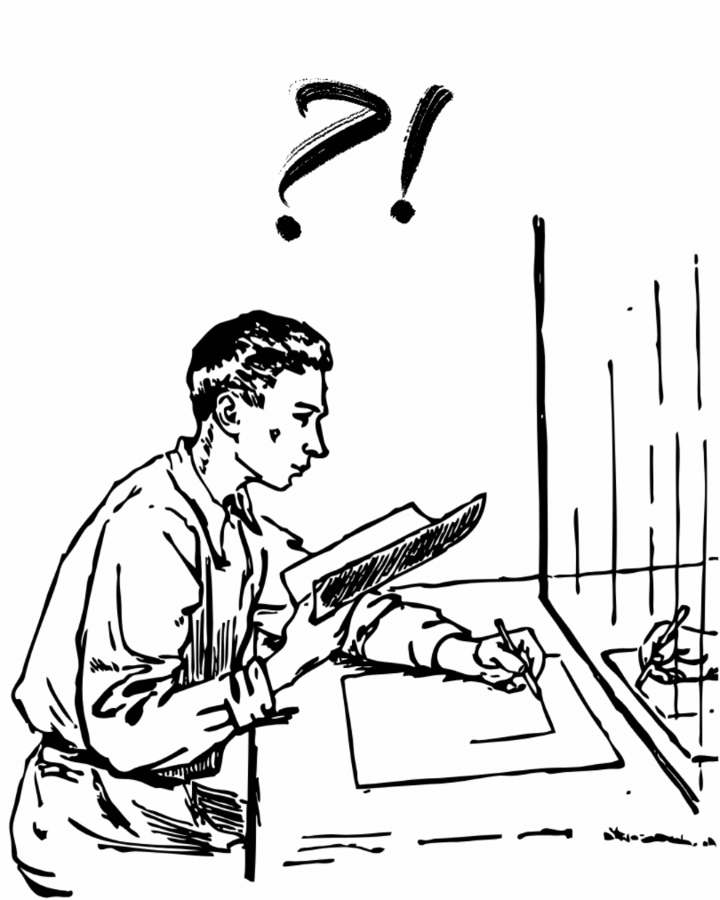
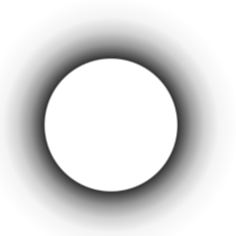
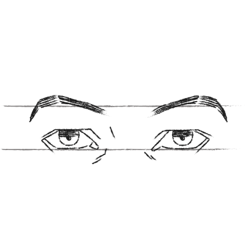
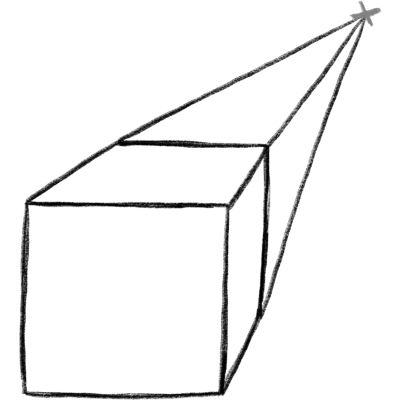
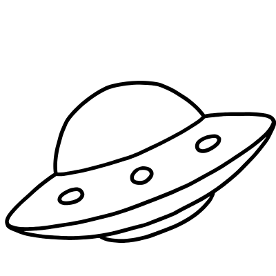
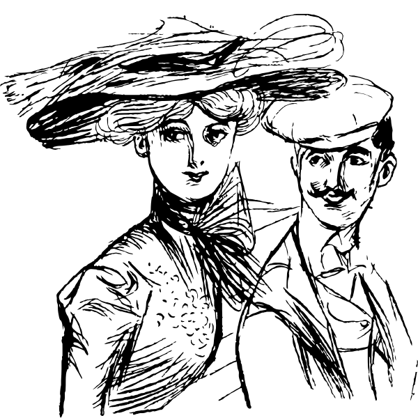
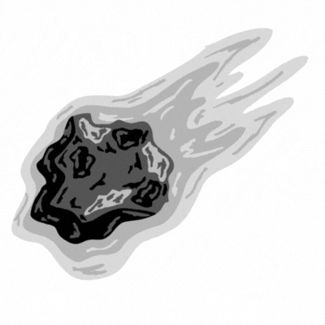
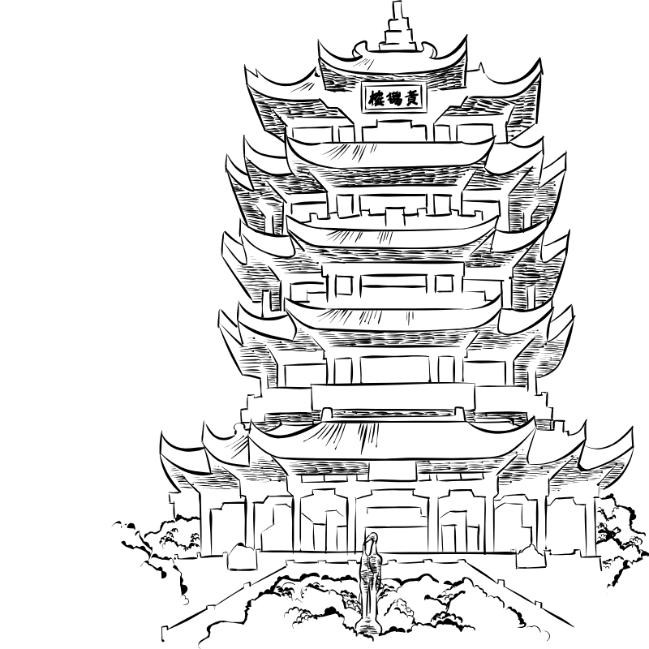

O sketch, ou rascunho, é a etapa inicial e mais livre do processo artístico. Diferente de uma obra finalizada, ele não busca a perfeição, mas sim o início do conceito de uma ideia. É o "esqueleto" que sustenta qualquer desenho complexo.
Sua principal função é o estudo e a experimentação, o rascunho é utilizado como uma ferramenta de diagnóstico: através dele, conseguimos identificar vícios de traço e entender como o artista processa formas e volumes antes de aplicar o acabamento.
Não existem regras rígidas. Normalmente é feito com grafite, canetas, nanquim ou ferramentas digitais. O foco deve ser na agilidade e na percepção visual. Para praticar, utiliza-se a técnica de observação e a repetição de formas geométricas simples para construir objetos complexos
Para evoluir no desenho, é preciso dominar os pilares que dão realismo e estrutura à obra.
A técnica de aplicar diferentes tons para criar a ilusão de volume e profundidade em objetos bidimensionais.

O estudo das proporções e estruturas (humanas ou animais), garantindo que o desenho tenha coerência e equilíbrio.

O método de representar a distância e o espaço em uma superfície plana, criando o efeito de tridimensionalidade.





O estilo é a "assinatura visual" do artista. Ele nasce da mistura das técnicas que você aprendeu com as suas preferências pessoais.
Ao explorar as diversas possibilidades artísticas, o objetivo não é apenas replicar uma estética, mas sim observar como diferentes artistas utilizam os mesmos fundamentos de formas distintas. Essa percepção é o que diferencia um desenhista técnico de um artista com voz própria.
Ao entender essas variações e como elas se aplicam ao seu traço, você terá mais clareza para desenvolver uma identidade visual que seja única e autêntica.